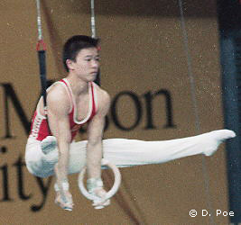

Li Jing (CHN)
1989 World AA Bronze Medalist
1991 World PB Champion
1992 Olympic R Silver Medalist

Medal Total
Olympic Games: 2
Silver
World Championships: 5 Gold, 2 Silver, 4 Bronze
World Cup: 2 Gold, 2 Silver, 2 Bronze
Competition Results
1988
All-Chinese Championships: 5th AA
Moscow News: 5th AA, 2nd PH, 3rd PB, 3rd HB
Pacific Championships: 1st AA, 1st PH, 1st V, 1st PB, 1st HB
1989
American Cup: 5th AA
Beijing International: 1st AA, 1st V, 1st PB, 1st HB, 2nd FX, 2nd PH, 2nd R
CHN Championships: 1st AA
Chunichi Cup: 5th AA
Intl. Mixed Pairs: 1st Team
Tokyo Cup: 2nd PH, 7th HB, 8th PB
World Championships: 3rd Team, 3rd AA, 1st PB, 3rd
PB, 8th V
1990
Asian Games: 1st Team, 1st AA, 1st V, 2nd PH, 3rd PB
China Cup: 3rd AA
French International: 2nd AA
World Cup: 3rd AA, 1st PH, 1st HB, 2nd R, 2nd
PB, 3rd V
1991
China Cup: 3rd AA, 1st R
GER-USSR-CHN Tri-Meet: 6th AA
Seiko Grand Prix: 1st AA
World Championships: 2nd Team, 21st AA, 1st PB, 3rd PH,
8th R, 8th V
1992
CHN Championships: 2nd AA
Olympic Games: 2nd Team, 2nd R, 7th PH
World Championships: 1st PH, 1st PB, 2nd HB, 5th R
1993
East Asian Championships: 1st Team, 9th AA, 1st R, 2nd HB, 6th PH, 6th
PB
1994
Asian Games: 1st Team, 6th AA, 1st HB
World Championships (Dortmund): 1st Team
This page was created on November
20, 2005 and was last updated on June 5, 2010.
© Gymn Forum